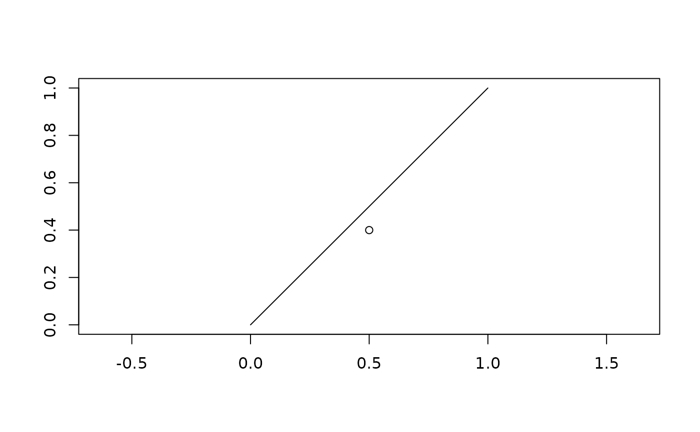

Plot GEOS geometries
# S3 method for class 'geos_geometry'
plot(
x,
...,
asp = 1,
bbox = NULL,
xlab = "",
ylab = "",
rule = "evenodd",
add = FALSE,
simplify = 1,
crop = TRUE
)Passed to plotting functions for features: graphics::points()
for point and multipoint geometries, graphics::lines() for linestring
and multilinestring geometries, and graphics::polypath() for polygon
and multipolygon geometries.
Passed to graphics::plot()
The limits of the plot as a rct() or compatible object
The rule to use for filling polygons (see graphics::polypath())
Should a new plot be created, or should handleable be added to the
existing plot?
A relative tolerance to use for simplification of geometries. Use 0 to disable simplification; use a higher number to make simplification coarser.
Use TRUE to crop the input to the extent of the plot.
The input, invisibly
plot(as_geos_geometry("LINESTRING (0 0, 1 1)"))
plot(as_geos_geometry("POINT (0.5 0.4)"), add = TRUE)
